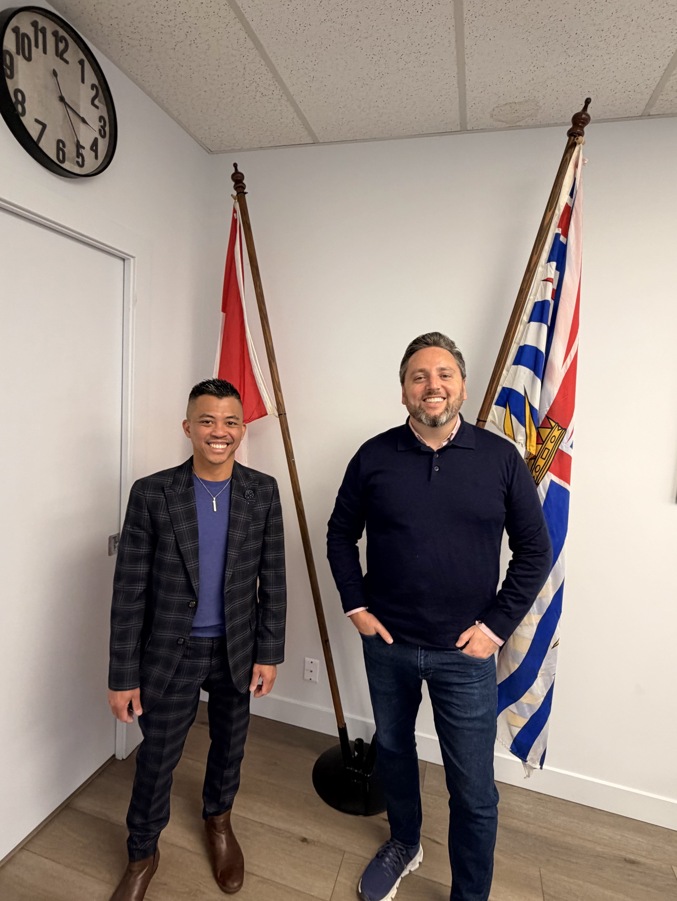
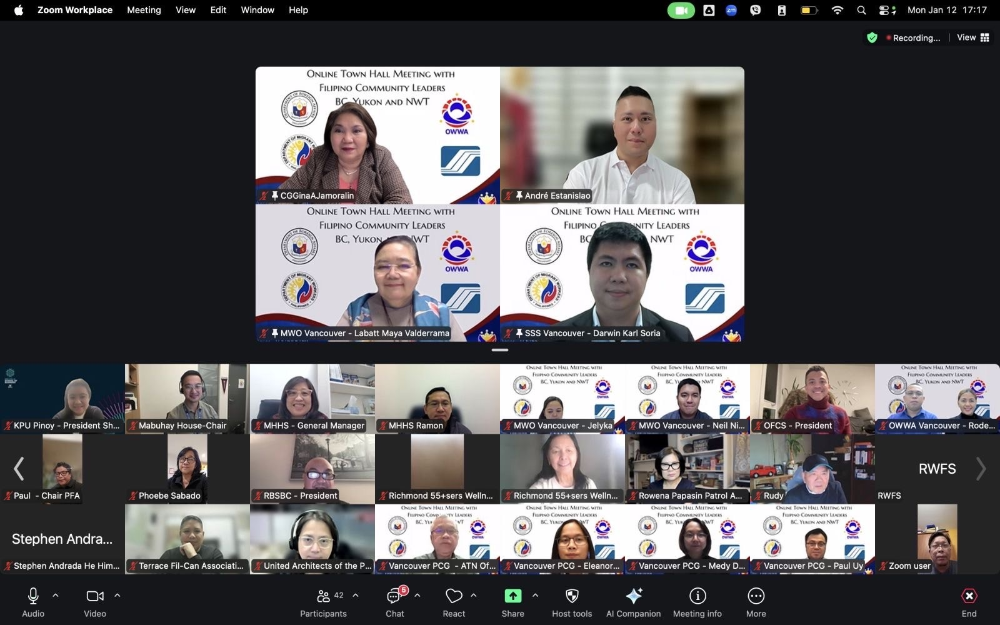

News & Updates
Community Highlights
Updates from OFCS and our community—celebrating milestones, events, and moments that strengthen Filipino-Canadian connection in the Okanagan.
Latest Posts
These posts are published on our Facebook group. Click “Read on Facebook” for full details and photos.
Building the Future Workforce: OFCS Advances Youth Readiness Initiative with MLA Gavin Dew
OFCS President Speaks on Immigration Policy and Workforce Realities in Media Interviews
Filipino Community Leaders Connect at Philippine Consulate Online Town Hall
Community Compassion in Action: Church of the Nazarene Supports Typhoon Relief in the Philippines
Successful OFCS Christmas Party & 30th Anniversary Celebration
The Okanagan Filipino Canadian Society proudly celebrated the success of its Annual Christmas Party, which also marked the 30th Anniversary of the founding of the organization—originally established as the Okanagan Filipino Club Society. The milestone event honoured three decades of service, community building, and cultural preservation in the Okanagan.
Simbang Gabi 2025: A Celebration of Faith and Community
The Catholic Filipino community in Kelowna celebrated a successful Simbang Gabi 2025, marked by strong attendance, meaningful worship, and shared traditions that strengthened faith and community bonds throughout the Christmas season.
Media Releases
OFCS President Interviewed by OMNI TV
Jordg Lemita, President of the Okanagan Filipino-Canadian Society, was interviewed by OMNI TV in Vancouver, sharing perspectives on the ongoing discussions surrounding the proposed Filipino Cultural Centre in the Lower Mainland. The interview emphasized unity, collaboration, and the importance of inclusive leadership within the Filipino-Canadian community
OFCS President Discusses TFW Departures on OMNI Filipino
Kelowna, BC — Jordg Lemita, President of the Okanagan Filipino-Canadian Society (OFCS), recently appeared on OMNI Filipino to discuss the growing number of Temporary Foreign Workers (TFWs) leaving Canada due to recent federal immigration policy changes. During the interview, Lemita shared that an estimated 400 TFWs in the Okanagan have either returned home or are preparing to leave within the past six months, reflecting the federal government’s move to reduce the temporary resident population to below 5% of Canada’s total population. From an employer perspective, Lemita explained that work permit renewals have become more difficult due to government caps, LMIA limitations, and rising regional unemployment. Employers are now informing workers six to eight months before permit expiry to allow time for planning. He also noted that some workers are exploring alternative pathways, including learning French to qualify for Francophone mobility opportunities outside Quebec. Lemita acknowledged the emotional impact of these changes on workers and their families, many of whom viewed employment in Canada as a long-term pathway toward permanent residence and citizenship. He emphasized that most workers are actively researching their options and preparing responsibly. When asked about undocumented work, Lemita described the topic as sensitive and stressed the importance of maintaining legal status, advising workers to avoid illegal employment and return home if no lawful pathway is available. Addressing the broader policy goal of reducing TFW numbers, Lemita said the move could create more opportunities for local workers but warned of potential productivity losses, especially as experienced employees depart. He highlighted that Filipino workers are globally sought after for their strong work ethic, reliability, adaptability, and service-oriented mindset—qualities employers deeply value. Lemita concluded by outlining OFCS’s focus on youth and young professional workforce development, including programs designed to prepare local talent to meet employer expectations as immigration pathways continue to tighten.
Sinulog Festival Set for January 18 at Corpus Christi Church in Kelowna
The Okanagan Filipino-Canadian Society (OFCS) sat down with the organizers of this year’s Sinulog Festival to highlight the significance of the upcoming celebration, happening on January 18 at Corpus Christi Church. During the interview, organizers Rev. Fr. Cerlouie Jimenez, Laarne Apalla Bautista (Coordinator), Arniel Abella(Committee President), and Jason Ricasa (Coordinator) shared insights through six key questions covering the meaning, purpose, and community impact of Sinulog. The organizers emphasized that Sinulog is a cultural and religious celebration honoring the Sto. Niño, symbolizing faith, hope, and gratitude. They highlighted the importance of celebrating Sinulog in Kelowna as a way to preserve Filipino identity, strengthen faith, and bring the community together, especially for younger Filipino-Canadians. They also shared that this year’s celebration will feature Holy Mass, traditional Sinulog dance, music, and fellowship, welcoming both Filipinos and non-Filipinos alike. First-time attendees can expect a family-friendly, faith-centered, and culturally rich experience. Above all, the organizers stressed that Sinulog is not just a festival, but a reminder of bayanihan, unity, and shared devotion, inviting everyone in the community to come together and celebrate as one. The OFCS encourages the community to join the Sinulog Festival on January 18 and be part of this meaningful expression of faith and Filipino heritage in the Okanagan.